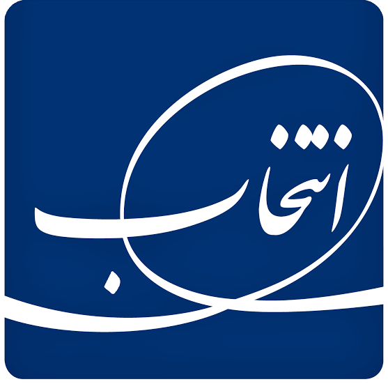

از عارضهیابی ۳۶۰ درجه تا پیشنهاد اجرایی محصول و بازاریابی برای اسنوا و دوو
محصول قابل دفاع × عرضه پایدار × تجربه قابل اثبات × قیمتگذاری شفاف

معاونت بازاریابی
تیم مدیریت محصولات سرگرمی
(صوتی و تصویری)
اسنوا با شکاف عمیق تبدیل آگاهی به انتخاب اول روبهروست. دوو پذیرش بهتری دارد اما ارزش خرید در برابر قیمت برای بخش قابل توجهی از مخاطبان مانع شده است.
S1 = پیمایش آگاهی و انتخاب برند (نمونه بازار، نه سهم فروش ملی). این دو عدد از یک مطالعه میآیند و نشان میدهند شناخت بهتنهایی خرید نمیسازد.
از نگاه محصول: کیفیت ادراکشده، نظر دیگران و تجربه منفی قبلی در مسیر انتخاب اسنوا وزن دارند. پاسخ باید در نقطه فروش و با شاهد محصول باشد.
S6 = تحلیل مانع قیمت در پاسخدهندگان خارج از فهرست بررسی. این عدد به کل مشتریان دوو تعمیم داده نمیشود.
دوو برند کرهای با سابقه جهانی است. در ایران باید این هویت بینالمللی در کنار قیمتگذاری شفاف و تجربه تصویری رقابتی دیده شود. کاهش کور قیمت پاسخ پیشفرض نیست.
اسنوا: هوشمندی بومی، متناسب با زندگی ایرانی. Done و Dana اینجا ارزش بیشتری دارند و باید دیده شوند.
دوو: برند کرهای با تجربه جهانی در سرگرمی و تصویر. هویت بینالمللی + قیمتگذاری شفاف. پیشنهاد محصول و بازاریابی: Done برای ارزش برند دوو ضروری نیست.
سبد باید شفاف باشد: جهیزیه، اقتصادی، کامل. همه مدلهای کلیدی در نمایش و پیام فروش حضور داشته باشند.
Dana (بتا): نماوا و فیلیمو، اوقات شرعی، نتایج ورزشی لیگ برتر، اتصال به فروشگاههایی مثل افق کوروش.
Done روی Google TV: مسیر واقعبینانه مشابه لایه محتوایی سونی و PatchWall شیائومی؛ نه جایگزینی کامل لانچر.
SLA: ۳۰ روز تعویض بدون قید (انتخاب سرویس) مزیت واقعی است و باید در نقطه فروش با صدای بلند گفته شود.
پیشنهاد: ادغام تدریجی SmartBoom و Done Home برای پروتکلهای بیشتر.
تلویزیون میتواند نقطه ورود به یخچال، لباسشویی و سایر محصولات گروه باشد. SmartBoom و Done Home ابزار این اتصالاند.
باشگاه مشتریان فعالتر: تعویض محصول قدیمی با جدید + قیمتگذاری شفاف در بازخرید. هدف افزایش تکرار خرید و فروش متقاطع است.
موج اول: ۱۲ فروشگاه تخصصی در ۶ شهر بزرگ. در هر شهر فروشگاههای شاهد (بدون مداخله ویژه) برای مقایسه فروش و سود افزایشی در نظر گرفته میشود.
پنج زون تجربه + فروشنده آموزشدیده + موجودی پایدار مدلهای کلیدی.
لایه کشف محتوای محلی روی Android TV / Google TV. محتوا را از سرویسهای مختلف در یک تجربه واحد جمع میکند.
سونی لانچر Google TV را عوض نمیکند؛ اپها و ردیفهای محتوایی خود را داخل تجربه Google TV قرار میدهد.
دوو ریشه کرهای و تجربه جهانی در لوازم خانگی و تصویر دارد. در ایران باید این هویت بینالمللی در پیام فروش، طراحی و استاندارد فنی دیده شود؛ نه فقط قیمت.
S3 = سنجش موجودی و کمبود در کانال · S4 = سنجش آموزش فروشنده و صحت برچسب قیمت
بدون موجودی پایدار و فروشنده آماده، هر سرمایهگذاری روی آگاهی و تبلیغ، تقاضا را به نارضایتی تبدیل میکند.
S7 = تحلیل سهم نمایش در بازار چندبرندی. عمق نمایش گروه نیز کمتر گزارش شده (حدود ۲٫۶ در برابر حدود ۴ دستگاه).
نقش اسنوا و دوو، فیچرهای الزامی و ممنوع، نردبان مدل و قیمت، پیام فروش مدلمحور. Done و Dana ارزش اصلیشان در اسنواست. دوو بهعنوان برند کرهای با استاندارد جهانی روی تصویر و قیمتگذاری شفاف میماند. خروجی: ماتریس برند-فیچر و کارت مقایسه رقابتی.
آزمون تصویر با ورودی و محتوای یکسان. تصمیم درباره شکافها: نبود پنل نیتیو ۱۲۰ هرتز در دوو با وجود پشتیبانی VRR، ضعف تعریف سری گیمینگ، پوشش سایزهای پرتقاضا بهویژه ۶۵ اینچ.
میزبانها: سری هرمز، سری ۴۰۰، اندروید باکس. Dana با قابلیتهای بتا (نماوا، فیلیمو، اوقات شرعی، نتایج ورزشی). مسیر Google TV مشابه سونی و PatchWall. اندازهگیری بوت، منو، خطا و کارکرد آفلاین.
اتصال واقعی به مدلهای دقیق یخچال و لباسشویی. پیشنهاد ادغام SmartBoom و Done Home برای پروتکلهای بیشتر. کنترل محلی در قطع اینترنت. پایلوت محدود قبل از هر ادعای گسترده.
۳۰ روز تعویض بدون قید (انتخاب سرویس) باید در نقطه فروش، آموزش فروشنده و مواد فروش با صدای بلند گفته شود. ثبت یکسان علت خرابی و کاهش مراجعه تکراری.
سیاست ۱۵/۳۰/۶۰: پیشنهاد اجرایی برای چارچوب خدمت — ۱۵ شب امکان آزمون در خانه، ۳۰ روز تعویض بدون قید، ۶۰ روز پوشش عیب اولیه. این سیاست پس از تأیید حقوقی و مالی نهایی و ظرفیت اجرا اعلام عمومی میشود؛ تا آن زمان فقط مزیت فعلی ۳۰ روزه برجسته میگردد.
تلویزیون نقطه نمایش یخچال، لباسشویی و سایر محصولات گروه. محتوای کنترلشده و قابل خاموشکردن توسط کاربر. اتصال سرنخ به فروش و سنجش فروش متقاطع. هدف: تلویزیون فقط فروش خودش را نسازد.
طرح تعویض محصول قدیمی با جدید. قیمتگذاری شفاف در فرآیند بازخرید. عضویت اختیاری و مراقبت. هدف افزایش تکرار خرید و فروش متقاطع. ارتقای سهساله فقط موضوع امکانسنجی است و تا مصوبه مستقل وعده داده نمیشود.
موج اول: ۱۲ فروشگاه تخصصی در ۶ شهر (تهران، کرج، اصفهان، شیراز، مشهد، تبریز). برای هر فروشگاه تخصصی، یک فروشگاه عادی همسطح بهعنوان «شاهد» انتخاب میشود تا فروش و سود افزایشی واقعی سنجیده شود. گسترش فقط پس از دیدن نتیجه مثبت نسبت به شاهد.
رفع فوری کمبود مدلهای سالم و سودآور. هماهنگی تقاضا، سفارش، تولید، موجودی، نصب و خدمات. تعریف روز پوشش و SKUهای حیاتی. این کار پیششرط همه آزمونهای فروشگاهی است.
واژهنامه یکسان فروش نهایی، موجودی و سود مدل. اقتصاد هر SKU قبل از تعهد هزینه. هدف ۲۵–۳۰٪ سهم فروش گروه مشروط به عبور از دروازههاست؛ نه تعهد قطعی و نه معادل ظرفیت تولید.
۶ شهر: تهران · کرج · اصفهان · شیراز · مشهد · تبریز
۱۲ فروشگاه تخصصی: در این فروشگاهها پنج زون تجربه، آموزش فروشنده، موجودی پایدار مدلهای کلیدی و دموی استاندارد اجرا میشود.
۱۲ فروشگاه شاهد: فروشگاههای عادی همسطح در همان شهرها که هیچ مداخله ویژهای (زون، آموزش اضافه، موجودی ویژه) دریافت نمیکنند. فقط برای مقایسه فروش و سود افزایشی استفاده میشوند.
اگر فقط فروشگاه تخصصی را باز کنیم و فروش آن را ببینیم، نمیدانیم رشد بهخاطر زون و آموزش بوده یا بهخاطر فصل، تبلیغ کلی یا شانس.
با داشتن فروشگاه شاهد همسطح، میتوان گفت: «فروش و سود این ۱۲ نقطه نسبت به ۱۲ نقطه مشابه چقدر بیشتر شده است؟»
چه چیزی نشان داده میشود: چند مدل کنار هم با ورودی HDMI یکسان و فیلم/محتوای یکسان.
آورده: مشتری تفاوت روشنایی، کنتراست، رنگ و حرکت را با چشم میبیند؛ نه از روی کاتالوگ.
چه چیزی نشان داده میشود: Done Launcher، Dana (جستوجوی نماوا/فیلیمو، اوقات شرعی، نتایج ورزشی)، کارکرد بدون اینترنت.
آورده: «هوشمندی بومی» از شعار به تجربه تبدیل میشود و تفاوت اسنوا با بقیه ملموس میگردد.
چه چیزی نشان داده میشود: VRR، تأخیر ورودی و روانی حرکت فقط روی مدلهای واجد شرایط.
آورده: مشتری بازیدوست دلیل فنی خرید مدل بالاتر را میفهمد و ارزش خرید روشنتر میشود.
چه چیزی نشان داده میشود: صحنه سینمایی یکسان روی مدلهای مختلف + ترکیب با ساندبار در صورت وجود.
آورده: تفاوت صدا و تصویر در حالت تماشای فیلم برای مشتری قابل قضاوت میشود.
چه چیزی نشان داده میشود: کنترل ساده یخچال یا لباسشویی سازگار از طریق SmartBoom روی صفحه تلویزیون.
آورده: تلویزیون از «نمایشگر» به «نقطه ورود اکوسیستم انتخاب» تبدیل میشود و فروش متقاطع معنا پیدا میکند.
محتوای پخششده در همه زونها باید کنترلشده و یکسان باشد. روی تلویزیون Full HD فقط دموی HD و روی مدل 4K فقط دموی 4K پخش شود تا مشتری کیفیت واقعی همان دستگاه را ببیند؛ نه کیفیت پایینتر یا بالاتر از واقعیت. فیلم و کلیپ مقایسه باید از قبل تأیید شده و در همه فروشگاهها یکی باشد.
تعریف یکسان فروش نهایی، موجودی و سود مدل قبل از هر تصمیم رشد
اتصال سفارش، تولید، موجودی، نصب و خدمات به هم
اولویت فوری؛ معطل کامل شدن سامانه نشود
سبد، کیفیت میدانی و پایداری نرمافزار آماده شود
اندازهگیری فروش و سود افزایشی نسبت به شاهد
فقط پس از عبور از دروازه G2 و G3
• تأیید نقش اسنوا بهعنوان جایگاه اصلی نمایش Done و Dana
• تأیید پیشنهاد: Done برای ارزش برند دوو ضروری نیست؛ دوو با هویت کرهای و استاندارد جهانی روی تصویر و قیمتگذاری شفاف میماند
• تأیید مسیر محتوایی Done روی Google TV (مشابه سونی و PatchWall)
• تأیید پیشنهاد ادغام تدریجی SmartBoom و Done Home
• تأیید موج اول: ۱۲ فروشگاه تخصصی در ۶ شهر + ۱۲ فروشگاه شاهد
• برجستهسازی جدی SLA ۳۰ روزه در نقطه فروش و آموزش فروشنده
• فعالسازی باشگاه مشتریان با تعویض قدیمی و قیمتگذاری شفاف بازخرید
• نمایش شفاف سبدها (جهیزیه، اقتصادی و ترکیبهای پرفروش)
• اولویت بررسی شکاف پنل نیتیو ۱۲۰ هرتز و تعریف روشنتر سری گیمینگ دوو
اسنوا جایگاه هوشمندی بومی و Done/Dana است. دوو جایگاه برند کرهای با تجربه جهانی، سرگرمی هوشمند و قیمتگذاری شفاف است.
سه قفل باید همزمان باز شوند: عرضه پایدار مدلهای سالم، اعتماد و اثبات در نقطه فروش، ارزش خرید روشن برای مشتری و کانال.